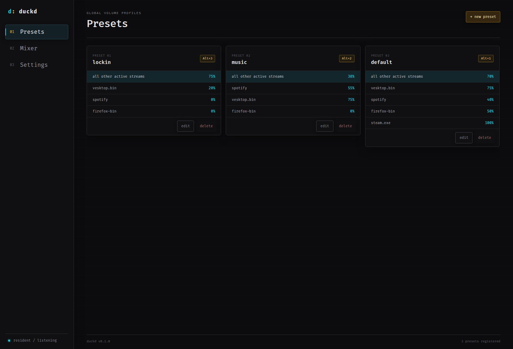

Hotkeys that follow you
Recall an entire volume preset from any app, even while duckd’s main window is hidden.
desktop audio, under control
duckd gives every app its place in the mix. Save a preset, bind a shortcut, and switch audio levels without leaving what you’re doing.
Also available: other platform
01 / features
Recall an entire volume preset from any app, even while duckd’s main window is hidden.
See active audio streams together and tune each application to exactly the right level.
Set a fallback level for unlisted streams, then override only the apps that matter.
Close the window and keep every shortcut ready from a compact system-tray tool.
Your setup lives in a clean TOML file—human-readable, local, and easy to version.
Import or export your configuration to back it up or move your presets to another machine.
02 / interface
A focused, terminal-inspired interface for presets, live streams, and the settings behind them.
